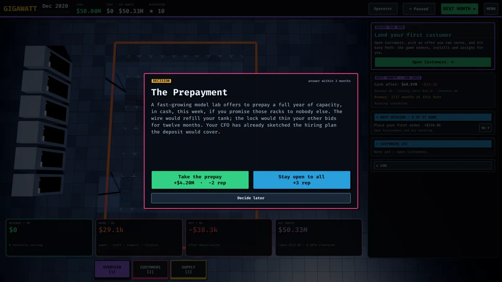
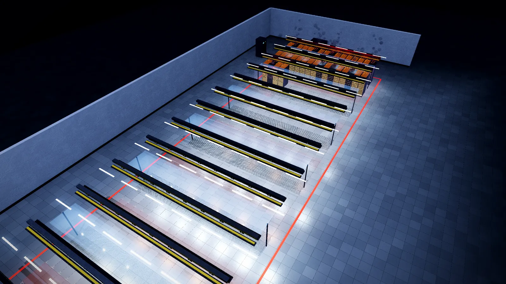

Incidents and resilience
Fires, chiller trips, outages, supply shocks and customer defaults — what can go wrong and how to be the operator it doesn't happen to.
After an opening grace period, roughly one world event fires every few months. Each one tests a decision you made earlier — or teaches you the decision you should have made. The event log on the Overview screen explains the lesson every time.

The incident catalog
Utility outage. A weak power chain (no UPS, no battery string, an undersized generator, no transfer switch) means running jobs restart from checkpoint, every serving contract takes an SLA miss, and reputation drops. A complete chain — UPS + battery + generator + transfer switch, sized N+1 — rides through with zero customer impact. The Outage protection panel on the Build screen shows your tier and the exact gap to close.
Fiber cut. A backhoe takes out a fiber route. With a second carrier on a physically diverse path, customers never notice; with one circuit, it's an outage and a reputation hit. Two carriers is a Learning-path mission for a reason.
Fire. One online rack burns. A hall whose power chain is at N tier or better contains the fire to a short rebuild; in any weaker hall the rack is destroyed, the rebuild takes many months and reputation suffers.
Chiller trip. A compressor fault drops the cooling loop for hours: every serving contract takes an SLA miss and emergency pumping costs money per affected rack. N+1 chillers with automatic switchover keep the water cold while one unit is repaired.
Energy crisis. The spot utility rate jumps. PPAs cover the committed block (see Energy and the spot market); a lower PUE shrinks the exposed part.
Heatwave. Dry coolers derate in hot ambient air and extra chiller energy costs money. Warm-water liquid cooling tolerates hot days far better than air-cooled halls.
Customer default. A serving customer goes bankrupt mid-deal: the contract dies, a month of expected revenue never lands, reputation drops, and the cluster suddenly idles. A balanced contract book across several customers absorbs it.
Supply-chain shock. A fab substrate shortage and a port strike: every in-transit order slips. Dual-sourcing and safety stock are insurance, not waste.
Demand shock (March 2023). ChatGPT goes viral: allocation is slashed and accelerators already in your pipeline slip. Lead times quoted in a soft market are fiction in a hot one.
Hardware failures (always)
Independent of events, parts fail at a steady rate — GPUs, PSUs, NICs, NVMe drives, DIMMs, CPUs, ToR switches. A spare on the shelf puts the rack back in about a month; the vendor RMA without a spare takes roughly four, during which the rack misses SLAs and earns nothing while still depreciating. The Warehouse spares table tracks have vs advised per part; orders bundle the advised spares by default. Understaffing multiplies failure rates and slows repairs (see Money and operations).
The preparation checklist
- Complete power chain per hall, N+1 before signing high-SLA contracts
- Two carriers on diverse paths
- N+1 chillers once a central plant exists
- Spares shelf at the advised level, checked monthly
- Staffing at or ahead of need
- A PPA block covering baseline load
- A contract book spread across customers and workload kinds

Resilience is not a cost center — it's what tier-III customers pay for, and what keeps one bad month from ending the campaign.
Found a mistake or something missing? Edit this page on GitHub or ask in Discussions.